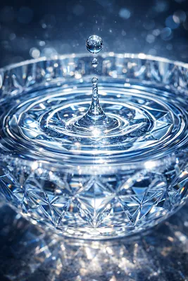
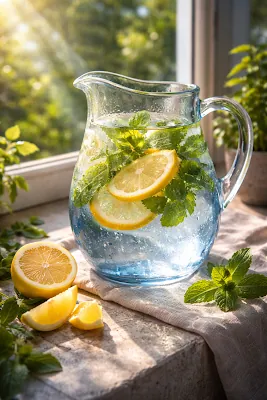

L’Élixir de Source : L’Art d’Hydrater ses Cellules plutôt que de se Noyer
Par Chest0 · 19 mars 2026
Introduction
Nous sommes des êtres liquides. Notre corps est composé à 70 % d’eau, et au niveau moléculaire, nous sommes constitués à 99 % de molécules d'eau. Pourtant, la majorité d'entre nous souffre d'une déshydratation chronique et profonde. Boire de l'eau est devenu un acte mécanique, souvent mal fait, avec une eau "morte" qui traverse le corps sans jamais entrer dans la cellule. Comprendre l'eau, c'est comprendre le flux de la vie elle-même.
Problème
Le problème ne vient pas de la quantité, mais de la qualité et de la structure de l'eau que nous consommons :
L'eau du robinet : Chargée de résidus médicamenteux, de chlore et de métaux lourds, elle est chimiquement traitée mais biologiquement agressive.
L'eau en bouteille plastique : Morte, stagnante et polluée par les microplastiques et les perturbateurs endocriniens (antimoine, phtalates).
L'eau "en vrac" : Boire deux litres d'un coup ne sert à rien si l'eau n'a pas la tension superficielle nécessaire pour traverser la membrane cellulaire. Elle finit directement dans la vessie sans hydrater tes tissus.
Résultat : fatigue matinale, maux de tête, peau sèche, articulations qui grincent et cerveau au ralenti.
Promesse
Réapprendre à boire une eau "vivante" et structurée peut transformer ton état général en quelques jours seulement.
Cet article va t'enseigner comment :
Filtrer et dynamiser ton eau pour qu'elle soit reconnue par tes cellules.
Hydrater ton fascia et tes organes en profondeur.
Utiliser l'eau comme un transporteur de nutriments et un éliminateur de toxines efficace.
Bénéfice
L'alchimie d'une hydratation cellulaire réussie offre des résultats immédiats :
Énergie stable : L'eau est le combustible de tes mitochondries (tes centrales électriques).
Clarté mentale : Le cerveau est l'organe le plus sensible à la déshydratation.
Détoxification naturelle : Une lymphe fluide qui évacue les déchets sans effort.
Éclat durable : Une peau repulpée de l'intérieur, bien au-delà de ce que peut faire une crème.

Pourquoi ce remède est efficace
L'eau n'est pas qu'un solvant. C'est un cristal liquide capable de stocker de l'information.
La Structure (Eau Morphogénique) : Dans la nature, l'eau tourbillonne (vortex). Ce mouvement change sa structure moléculaire, la rendant "plus fine" et capable de pénétrer les aquaporines de tes cellules.
Le Potentiel Hydrogène (pH) et le rH2 : Une eau de qualité doit être légèrement acide à neutre et surtout très antioxydante (réductrice).
Les Électrolytes : Pour que l'eau reste dans la cellule, elle doit être accompagnée de minéraux organiques. Boire de l'eau trop pure (distillée ou trop filtrée) sans la reminéraliser peut paradoxalement te déminéraliser.
Les bienfaits
L'eau vivante agit sur tous les plans :
Lubrification articulaire : Le liquide synovial a besoin d'une eau structurée pour amortir les chocs.
Thermégulation : Une meilleure résistance au chaud comme au froid.
Transit : L'eau "mange" les fibres pour balayer le colon.
Équilibre émotionnel : L'eau transporte les hormones. Une déshydratation légère augmente le taux de cortisol (stress).
La recette : L'Élixir de l'Eau Vivante
Voici comment transformer une eau "morte" en une eau de source régénératrice chez toi.
Ingrédients :
1 litre d'eau filtrée (filtre à charbon, osmose inverse ou carafe de haute qualité).
Une pincée de sel gris de mer ou de sel rose : Pour la conductivité et les minéraux.
Quelques tranches de concombre ou un quartier de citron : Pour apporter des informations "vivantes" (enzymes).
Un cristal de quartz rose ou d'améthyste (bien nettoyé) : Pour la fréquence vibratoire (optionnel).
Protocole de préparation :
La Filtration : Élimine les polluants chimiques.
La Dynamisation (Le Vortex) : Prends une cuillère en bois et crée un tourbillon rapide dans ton pichet pendant 30 secondes. Cela "casse" les clusters de molécules d'eau trop gros.
La Reminéralisation : Ajoute ton sel et tes végétaux.
L'Exposition : Laisse ton pichet à la lumière du soleil (ou de la lune) pendant 1 heure dans un récipient en verre bleu ou transparent.

Comment l’utiliser
La manière de boire est aussi importante que l'eau elle-même.
Le réveil : Bois 500 ml d'eau tiède (température du corps) avec un peu de sel dès le lever. C'est le "nettoyage de printemps" quotidien.
Petites gorgées : Ne "glougloute" pas un litre d'un coup. Bois par petites gorgées tout au long de la journée pour laisser le temps aux cellules d'absorber.
En dehors des repas : Évite de trop boire pendant que tu manges pour ne pas noyer tes sucs gastriques et ralentir la digestion.
À qui s’adresse ce rituel
Aux fatigués chroniques : Qui ont souvent simplement le sang trop épais par manque d'eau.
Aux sportifs : Pour éviter l'acidose et les blessures.
Aux femmes enceintes ou allaitantes : Dont les besoins en eau de qualité sont démultipliés.
À tous ceux qui souhaitent ralentir le processus d'oxydation (vieillissement).
Précautions
Le Plastique : Ne laisse jamais ta bouteille d'eau au soleil si elle est en plastique.
La Température : Évite l'eau glacée qui fige les graisses et éteint le feu digestif (Agni).
Écoute : Apprends à distinguer la vraie soif de la faim émotionnelle.
Conclusion & appel à l’action
L’élixir d’eau n’est pas une solution miracle immédiate.
C’est un rituel de reconnexion, une manière d’envoyer un message clair à ton corps : je te soutiens, je t’écoute, je te respecte.
👉 Pour rappel, si la nature ne l’a pas créé, ne le buvez pas. L'eau gazeuse industrielle saturée de CO2 n'est pas l'eau que tes cellules attendent.
Si tu souhaites aller plus loin dans cette approche naturelle du bien-être, je partage régulièrement :
des élixirs ciblés,
des rituels santé simples,
des guides pratiques pour renforcer le corps et apaiser le mental.
📚 Je suis auteur bien-être sous le pseudo Chest0 JM.S, et mes ouvrages sont disponibles sur Amazon.